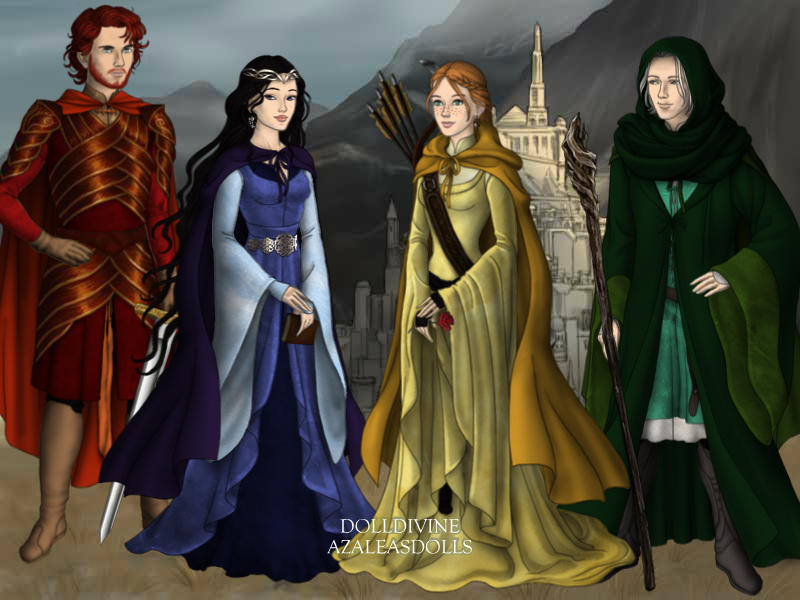
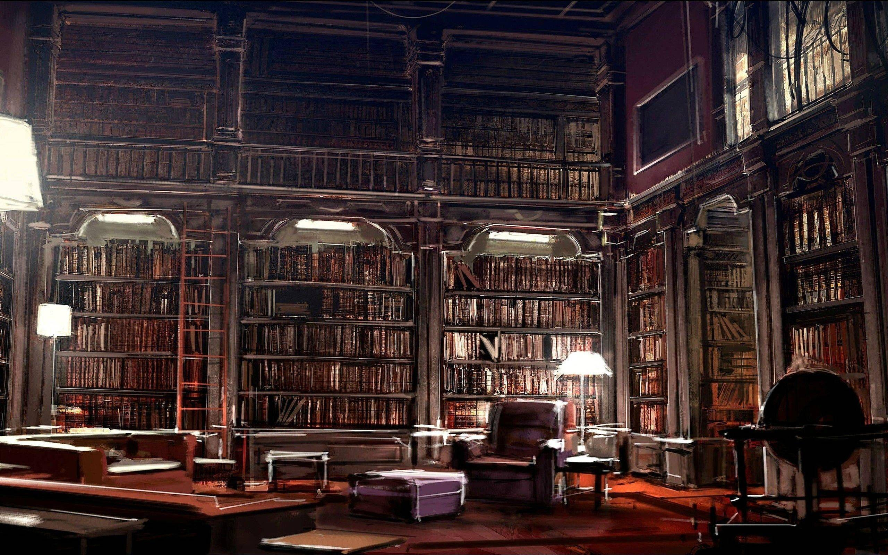

Published September 25, 2026

More than one thousand years ago, four remarkable witches and wizards— Godric Gryffindor, Helga Hufflepuff, Rowena Ravenclaw, and Salazar Slytherin—joined together with a single vision: to establish a school where young witches and wizards could safely learn the art of magic. Their dream became Hogwarts School of Witchcraft and Wizardry, one of the greatest magical institutions in history.
Built high among the Scottish Highlands, Hogwarts has stood for centuries, surviving magical wars, dark wizards, and countless challenges. Hidden from Muggle eyes by powerful enchantments, the castle continues to welcome students from across Britain every September.

Within the castle lies one of the largest magical libraries ever assembled. Thousands of enchanted books preserve centuries of magical knowledge, while the famous Restricted Section safeguards powerful and dangerous texts accessible only with a professor's permission.
Today, Hogwarts remains a symbol of courage, friendship, knowledge, and tradition. Every student who walks its moving staircases and enchanted corridors becomes part of a story that has shaped the wizarding world for generations.
Return to Daily Prophet